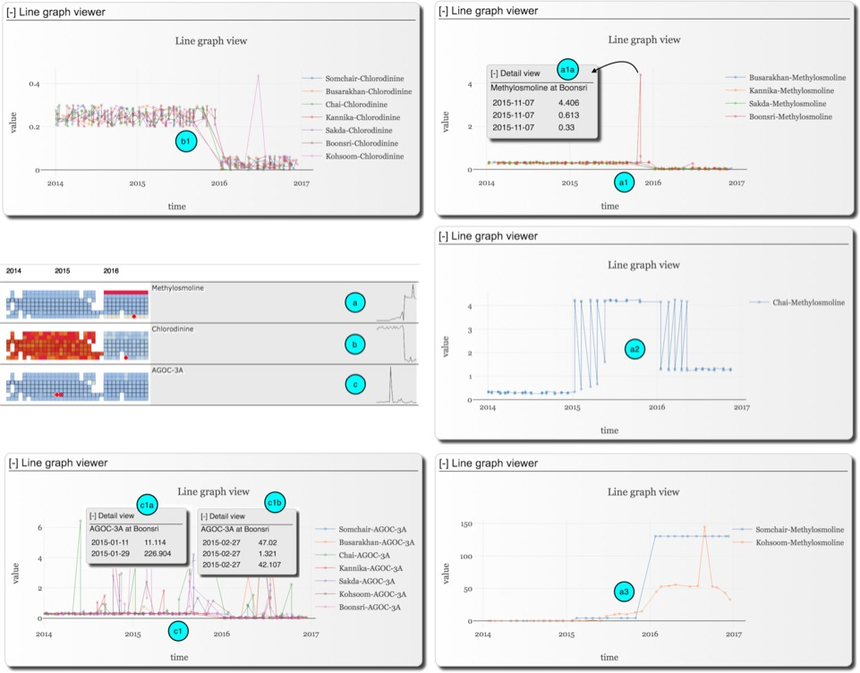
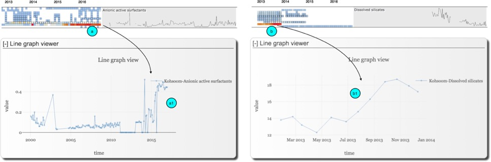
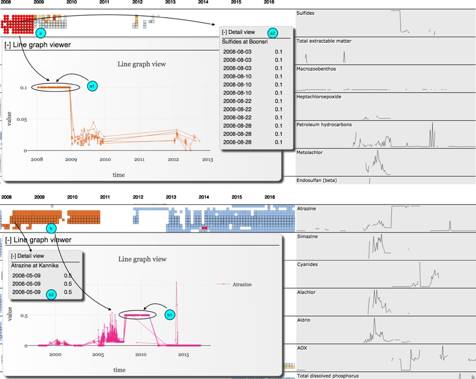
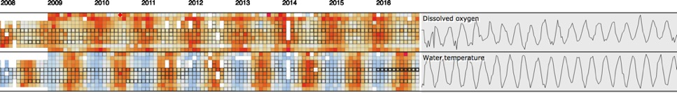
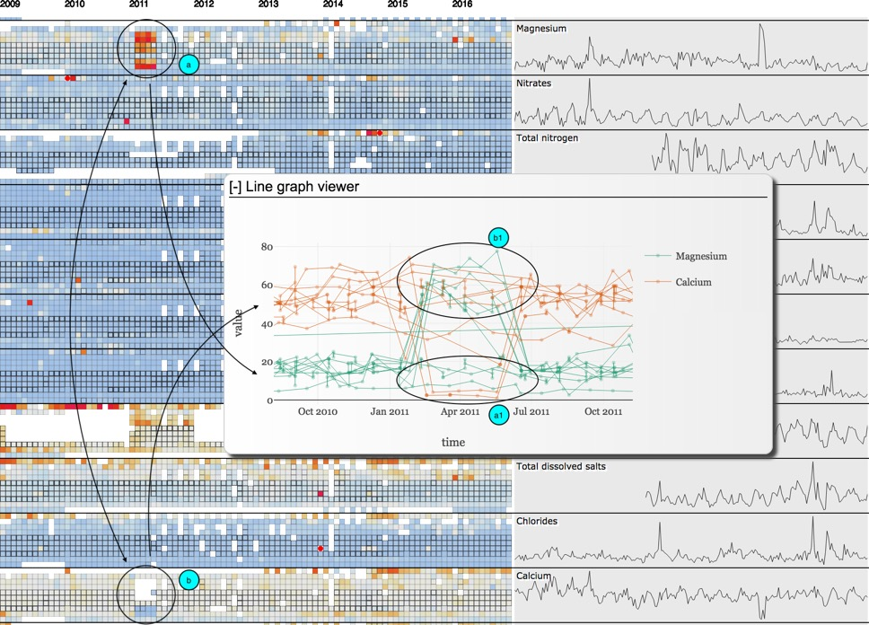
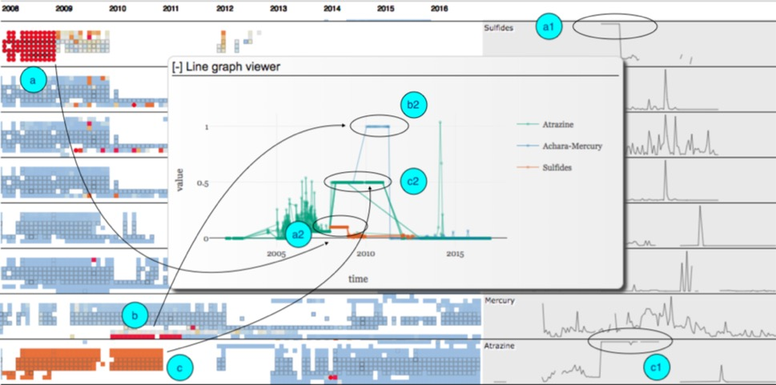

Entry Name: "TTU-IDV-MC2"
VAST Challenge 2018
Mini-Challenge 2
Team Members:
Van
Vung Pham, IDV Lab, Texas Tech University, vung.pham@ttu.edu, PRIMARY
Tommy Dang, IDV Lab, Texas Tech University, tommy.dang@ttu.edu,
ADVISOR
Student Team: NO
Tools Used:
HTML, CSS, JS
d3.js
Plotly.js
GraphLab Create
Ms.
Excel
Ms.
Word
Approximately how many hours were spent
working on this submission in total?
280
May we post your submission in the
Visual Analytics Benchmark Repository after VAST Challenge 2018 is complete? YES
Video
Provide a link to your
video. Example:
http://www.westbirmingham.ac.uk/uwb-smith-mc2-video.wmv
Questions
1.
Characterize the past and most recent situation with respect to
chemical contamination in the Boonsong Lekagul waterways. Do you see any trends of possible
interest in this investigation? Your
submission for this question should contain no more than 10 images and 1000
words.
Methylosmoline, Chlorodinine,
and AGOC-3A are the chemical elements of concern. Their trends were highly
correlated in the recent years (positively between Methylosmoline
and Chlorodinine and negatively between AGOC-3A and
the other two). They also come together in our visualization as we group by the
similarity among chemical elements. This could be explained by the fact that
AGOC-3A is the environmental-friendly chemical element and is supposed to be
used in place of the other two. For all these, the data collection started in
2014 and the main change happened at the end of 2015 and early 2016. Their
general trends overall locations (signatures) could be seen from (a), (b), and
(c) of Figure 1.
Pattern
1

Figure 1. AGOC-3A, Methylosmoline,
and Chlorodinine Trends
Chlorodinine was dropped at the
end of 2015 and early 2016 and remained to level after that, see (b) for its
signature, this behavior was somewhat consistent among all the locations,
except for one extreme value in June 2016 at Kohsoom
(b1).
The
overall trend of Methylosmoline was increasing (a),
however, it behaved differently at different locations. Its behavior could be
classified into three main groups as dropping (a1), increasing (a2), and
rapidly increasing to an extremely high level (a3).
At Busarakhan, Kannika, Sakda, and Boonsri, Methylosmoline was dropping (a1) and behaved similarly
except at Boonsri on November 2015. However, this
could just be an outlier since 3 measures made on that date at Boonsri and two others were quite close to the overall
normal value but only one is at very high values (a1a). At Chai, Methylosmoline was fluctuating but mainly increased in 2015
and reduced to a relatively high level in 2016 (a2).
One
suspicious point that we discovered is that Methylosmoline
was increasing starting in 2015 and became extremely high in 2016 onward at Somchair and Kohsoom (a3). We
could suspect that companies dump Methylosmoline in
these places in 2015 and very much in 2016 and early 2017 led to extremely high
level of Methylosmoline in these places during this
period.
Regarding
AGOC-3A, except for the extremely high values at Boonsri
on Jan 11, 2015 (this probably due to outlier or mistake see details 1 and
detail 2), the AGOC-3A values were fluctuating but the main trend is dropping
by the end of 20015 and early 2016. This is suspicious since AGOC-3A should be
increasing as it is an environmental friendly replacement of Methylosmoline and Chlorodinine.
All
in all, Chlorodinine was reduced, but the suspicious
behavior is that at the end of 2015 and early 2016, AGOC-3A was reducing and Methylosmoline was increasing. This could suggest that
companies were getting back to using Methylosmoline
instead of AGOC-3A.

Figure 2. Trends of Aionic active surfactants and Dissolved silicates
Besides
the previous chemical elements, our visualization also suggests other
interesting trends (Figure 2). The first one is the continuous increment of Anionic
active surfactants (AAS) at Kohsoom from early 2015
onward (a). This suggested us to look into the details of this element (a1).
AAS are found commonly detergents or washing agents, AAS they are toxic to
humans and marine organisms, so its continuous increment in early 2015 would
introduce the ecotoxicological impact on the river organisms at Kohsoom and so affect the bird distribution there.
Similarly, our visualization also noticeably suggests another element of
interest, it is the increment of Dissolved silicates at Kohsoom
in early 2013 (overview (b) and details (b1)), this could be explained for some
construction/building activities here in there but unfortunately the data was
discontinued after that.

Figure 3. Constantly high values of
Sulfides and Atrazine
Our
visualization also spots out consistently high value at all locations in the
whole year 2008 for Sulfides (a) and continuous 3 years for Atrazine (b) in
Figure 3. However, there are some points to consider as all these measures were
at the same constant value of 0.1 for Sulfides for the whole year 2008 (a1) and
of 0.5 for Atrazine for 3 continuous years 2008, 2009, and 2010 (b1) at all
locations. This would suggest possible anomalies in data sampling, otherwise,
investigation on these issues are needed. On the other hand, these were
measured several times in a month for each measure at each location, as the
thick borders of the cells in (a, b). For instance, in August 2008, Sulfides
was measured 12 times but resulted in the same constant value of 0.1 (a2) and
Atrazine at Kannika was measured for 3 times on May
05, 2008 and resulted in a constant value of 0.5 (b2). These, at the same time,
may also suggest that these constantly high values might be accurate, and so,
further investigation is needed in order to make conclusion.

Figure 4. Seasonal pattern of
Dissolved oxygen and Water temperature
One
more trend is that our visualization could clearly point out the seasonal
pattern of Water temperatures and Dissolved oxygen in Figure 4. This pattern
shows that the negative correlation between Water temperature and Dissolved
oxygen.
2.
What anomalies do you find in the waterway samples dataset? How do these affect your analysis of
potential problems to the environment? Is the Hydrology Department collecting
sufficient data to understand the comprehensive situation across the Preserve?
What changes would you propose to make in the sampling approach to best
understand the situation? Your submission for this question should contain no
more than 6 images and 500 words.

Figure 5. Misreport between Magnesium
and Calcium
The
first anomaly as shown in Figure 5 that our visualization spots out is the
misreport of Calcium for four months from Feb 2015 to May 2015 as Magnesium in
all locations (except for Decha, Sakda,
and Achara) and Magnesium as Calcium in these four
months at Boonsri and Kohsoom.
The visualization highlights the anomaly for Magnesium (a) and suggests us a similar
pattern as missing data or low values at this period for Calcium (b). Then
further exploration confirms the misreport of Magnesium as Calcium (a1) and
Calcium as Magnesium (b1).

Figure 6. High but at constant value anomalies
As
shown in Figure 6, our visualization suggests us to several ‘hot’ issues such
as high level of Sulfides in the 2008 (a), Mercury in 2010, and Atrazine in
2008, 2009, and 2010 (c). However, their constant colors over the periods and
their overall signatures (a1, c1) suggested us to look into their distributions
(a2, b2, c2). These show that Sulfides was high but being at a constant value
of 0.1 for the whole year 2008 at all locations, Mercury was at 1.0 for the
whole year 2010 at Achara, and Atrazine were at 0.5
in continuous 3 years 2008, 2009, and 2010 at all locations. These would lead
to difficulty to confirm if these are issues (as of the high values) or might
just be data sampling issues.

Figure 7. Inconsistent sampling frequencies
Another
data sampling issue is that there were too many missing data (white spaces in
our visualization) and some places (e.g., Boonsri and
Chai) data was sampled more frequently than the others as they contain more
cells with thicker strokes in our Visualization. Especially, another interesting
point our visualization highlights is that in 2016 at Chai Water temperature
was sampled for many times per month (as many as 36 and 37 times per month)
meanwhile the other elements were mostly measured about 3 times per month (or
missing).
3.
After reviewing the data, do any of your findings cause
particular concern for the Pipit or other wildlife? Would you suggest any
changes in the sampling strategy to better understand the waterways situation
in the Preserve? Your submission for this question should contain no more than
6 images and 500 words.
After
reviewing we found that AGOC-3A is supposed to be used to replace Chlorodinine and Methylosmoline,
so hypothetically, Methylosmoline and Chlorodinine should be decreasing and AGOC-3A should be
increasing. But it seems like AGOC-3A is dropped at the end of 2015 and early
2016. And Methylosmoline seemed to be used again in
placed of AGOC-3A so we eveidenced very high amount of
at Chai and extremely high at Somchair and Kohsoom. This would affect the life of the pipit.
In
addition, Aionic active surfactants seem to be high
recently in Kohsoom, this would be the results of
industrial deterants and would affect the animal
lives here too.
It
would be apparent that Kohsoom has issues with Methylosmoline and Aionic active
surfactants which would affect the animals and vegetation around that place.
However, the result suggests also a special attention at Somchair
where Methylosmoline is also very high from 2015
onward.